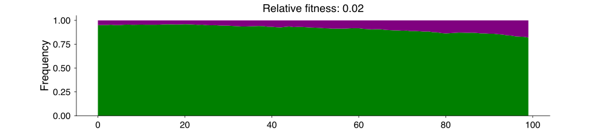

| variant | sequences | date | |
|---|---|---|---|
| 0 | wildtype | 1 | 2022-01-01 |
| 1 | wildtype | 12 | 2022-01-02 |
| 2 | wildtype | 17 | 2022-01-03 |
| 3 | variant | 1 | 2022-01-03 |
| 4 | wildtype | 11 | 2022-01-04 |
| 5 | variant | 1 | 2022-01-04 |
| 6 | wildtype | 15 | 2022-01-05 |
From Sequencing to Surveillance: Estimating SARS-CoV-2 variant fitness
SFA Data Analysis Meeting
Marlin Figgins
March 11, 2024
Introduction
Let’s talk about SARS-CoV-2 evolution!
Evolution and selection in SARS-CoV-2
All-time phylogenetic tree for SARS-CoV-2 from Nextstrain
Why study selection?
We are interested in the selection in SARS-CoV-2 for two main reasons.
Awareness: Quantifying variant advantages to understand the viral population right now or in short-term
Preparation: Forecasting variant advantage to predict viral diversity in the future
Instead of focusing on sequence-based methods which may be computationally infeasible with large numbers of sequences, we use coarser labels for estimating fitness of groups.
These labels can be at granular as you choose such as:
- haplotype,
- Pango lineage,
- Nextstrain clade.
Selection and Evolution
- Selection is the process by which individuals have higher fitness in certain environments
- Evolution is the change in the genetic composition of the population over time due to selection and heritable variation
- Relative fitness is the relative capacity for individuals to reproduce in a population
Illustrating selection
- An early mutation that takes us from green infections to purple which cause more secondary infection.
- In this case, the purple is selected for.
Quantifying selection and relative fitness
- Often, we’re interested in not just the presence of selection but its magnitude.
- When quantifying selection, you’ll often see selective coefficient or relative fitness discussed.
- Relative fitness is the difference in the growth rates of two variants i.e. the relative capacity for individuals to reproduce in a population

Remark: For those familiar with the selective coefficient \(s\), the relative fitness \(\lambda\) is given by \((1 + s) = \exp(\lambda)\)
Generating the data
Generally, we want to take sequences and classify them into variant groups such as Nextstrain clade or Pango lineage and then count their occurance per day or week. This will give us data of the form:
Data of this form is automatically generated at the level of US state and country in forecasts-ncov.
Generating sequence counts
Estimating relative fitness of variants
If we’re interested in estimating the relative fitness of variants from sequence counts, we need to model the change in frequencies over time.
We want to turn these into frequency and estimate the relative fitness we discussed before using the following equation:
\[ p_{v}(t) = \frac{p_{v}(0)\exp(\lambda_v t)}{\sum_{u} p_{u}(0)\exp(\lambda_u t)}. \]
This means that we’re estimating the following parameters:
\(p_{v}(t)\) is the frequency of variant \(v\) at time \(t\).
\(p_{v}(0)\) is the initial frequency of variant \(v\).
\(\lambda_{v}\) is the relative fitness of variant \(v\).
We’ll often work with the growth advantage \(\Delta_v = \exp(\lambda_{v} \tau)\) where \(\tau\) is the generation time.
Estimating relative fitness using evofr
We’ve developed a package called evofr that implements these models.
import evofr as ef
# Loading data as VariantFrequencies
variant_counts = pd.read_csv("./data/variant_counts.tsv", sep="\t")
data = ef.VariantFrequencies(
raw_seq = variant_counts,
pivot = "wildtype"
)
# Define model: tau is generation time
model = ef.MultinomialLogisticRegression(tau=1)
# Do inference using NUTS MCMC
inference_method = ef.InferNUTS(
num_samples=500,
num_warmup=100
)
posterior = inference_method.fit(model, data)Estimating relative fitness with evofr
Estimating relative fitness across multiple locations
This idea is pretty simple, we’re just saying that we think the relative fitnesses should be similar across geographies: \[ \lambda_{v, g} \sim \text{Normal}(\bar{\lambda}_v, \sigma_{v}) \]
\(\lambda_{v,g}\) is the relative fitness of variant \(v\) in geography \(g\).
\(\bar{\lambda}\) is the mean relative fitness of variant \(v\) across geographies.
\(\sigma_v\) is the standard deviation in the relative fitness of \(v\).
This is called partial pooling and it allows us to share information about the relative fitness across locations.
Low-data locations can receive information about variants that they haven’t seen yet or are below detectable levels.
Using Hierarchical models in Evofr
import evofr as ef
# Loading data as HierFrequencies
# Your data .csv should now have a location column
variant_counts = pd.read_csv("./data/variant_counts.tsv", sep="\t")
data = ef.HierFrequencies(
raw_seq = variant_counts,
pivot = "wildtype",
group="location"
)
model = ef.HierMLR(tau=1, pool_scale=1e-4)
# Do inference using NUTS MCMC
inference_method = ef.InferNUTS(
num_samples=500,
num_warmup=100
)
posterior = inference_method.fit(model, data)Automating variant forecasts
Automating SARS-CoV-2 variant frequency forecasts: forecasts-ncov
- We’ve developed a pipeline for:
- provisioning these sequence count data sets from both GISAID and open data,
- running the hierarchical MLR models on these data sets,
- and visualizing their results at https://nextstrain.org/sars-cov-2/forecasts/.
- This work was done with Jover Lee, James Hadfield, and Trevor Bedford.
Nextstrain SARS-CoV-2 forecasts (link)
Seattle Flu Alliance Dashboard (link)
- Amanda Perofsky has led the charge of applying this kind of pipeline to Seattle Flu Alliance data.
Seattle Flu Alliance Dashboard (link)
Evaluating forecasts
Fitness models provide accurate short-term forecasts of SARS-CoV-2 variant frequency
Forecasting variant frequencies is complicated!
- As we continue to develop these kinds of models, it’s essential to think about what they can do and when they work best!
Mimicking real-time forecast environments
- As we continue to develop these kinds of models, it’s essential to think about what they can do and when they work best!

Evaluating forecasts
- We find that in general existing frequency dynamic models work well for short-term forecasts.
Conclusions
- Estimating variant fitness with coarse-grain sequence counts can be useful for monitoring the rise of variants
- We’ve implemented the methodology for doing this and sharing information across geographies in a software package
evofr. - There’s a lot of room to expand and adapt these methods to different pathogens as well as to extend them to incorporate new data sources .etc